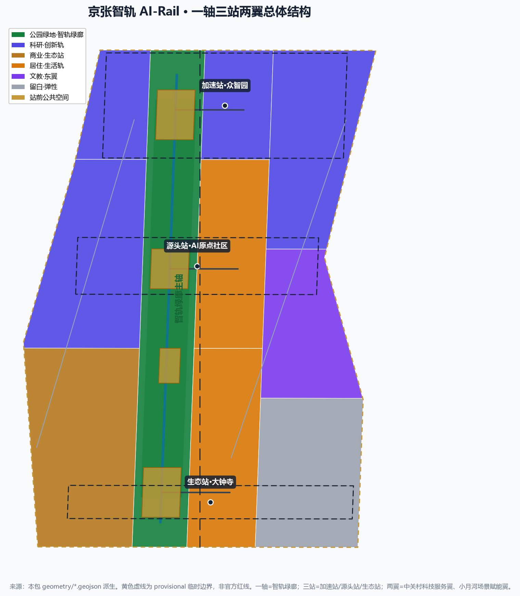
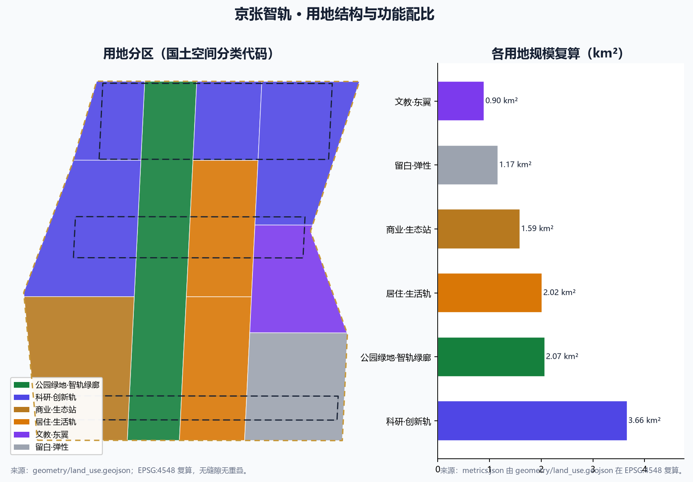
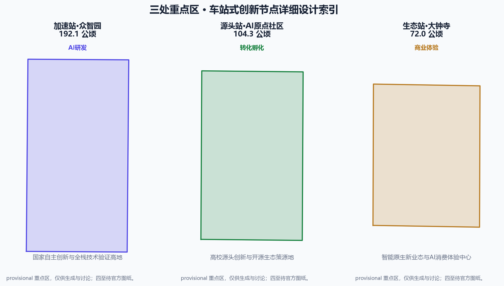
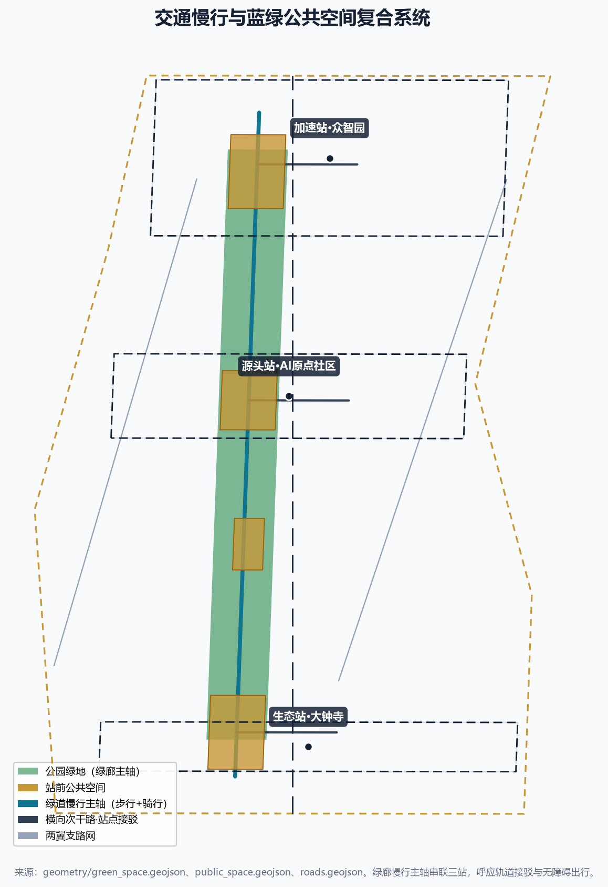
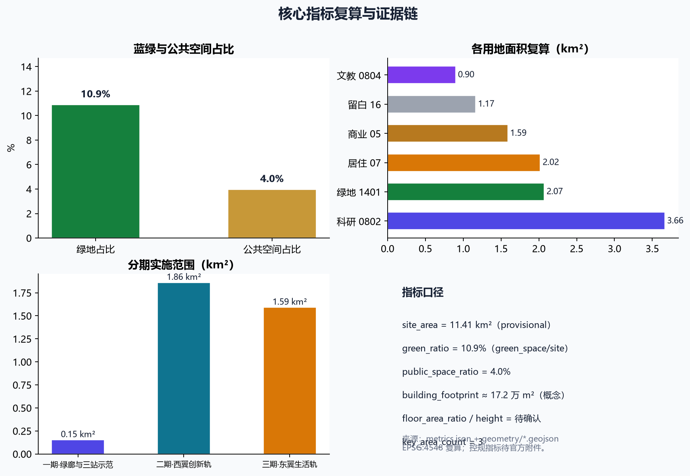

京张智轨 AI-Rail：从铁轨到智轨的百年京张AI创新带城市设计
以「京张智轨 AI-Rail」为核心概念，把百年京张铁路遗址走廊升维为 AI 创新主轴：一条智轨绿廊、三座车站式创新节点、两条场景侧线，构成三带（记忆轨/生活轨/创新轨）与三区两翼协同回路，形成世界级 AI 创新生态与城市智能体样板区的概念性设计方案。
京张智轨 AI-Rail：从铁轨到智轨的百年京张AI创新带城市设计
设计依据与资料清单
本方案依据北京市规划和自然资源委员会海淀分局《百年京张AI创新带城市设计国际方案征集资格预审公告》、面向全球智能体的开源征集任务书摘录，以及仓库登记的公开与清权资料编制。所有正式权威结论只来自 data/source_registry.json 中 usable_for_formal="yes" 的来源；背景与临时资料按用途边界使用，未取得官方精确红线，故空间边界全部采用仓库提供的临时粗略边界并醒目标注 来源 来源 来源。
设计判断依据《城市设计管理办法》对公共空间、建筑体量与风貌的整体统筹要求，《城市、镇控制性详细规划编制审批办法》对用地、开发强度与实施管理的区分要求，以及《国土空间调查、规划、用途管制用地用海分类指南》的用地分类逻辑。涉及法定强度、道路线位、拆改留、投资与开发时序的内容均写为概念建议，等待正式控规、道路红线、权属与工程资料补齐后复算 标准 标准 标准。
完整来源、指标、标准、设计深度与任务覆盖由 sources.json、metrics.json、compliance_matrix.json、standard_matrix.json 与 design_depth_matrix.json 承担；正文只在关键判断旁保留直接相关证据，供专业评审逐条复核 深度 深度。

三层范围工作框架
方案按公告确定的三层范围逐级落实：统筹研究范围（约 43.6 平方公里，北至北五环、东至京藏高速、南至西直门外大街、西至万泉河路）负责产业生态、三区两翼与未来城市形态研究；总体设计范围（约 11.4 平方公里，京张遗址公园周边 1—2 公里）负责控规深度城市设计；重点区域范围（约 368.4 公顷，自北向南为众智园、AI原点社区、大钟寺）负责三处重点区详细设计 来源 标准。
官方精确 polygon 尚未公开，本方案使用 brief/site-package/geometry/provisional_boundaries.geojson 中的临时粗略边界：geometry/site_boundary.geojson 与 geometry/key_areas.geojson 均标注 official_boundary=false、geometry_role=provisional_constraint，只用于生成、展示与临时自检。官方多边形到位后，site boundary、key areas、land_use、roads、green space、public space、buildings、phasing 与全部面积指标都需要统一复算 来源 深度。

统筹研究范围产业与未来城市研究
总体概念与命名体系。 本方案提出核心概念「京张智轨 AI-Rail」：把一百年前詹天佑主持修建的中国首条自主干线铁路——京张铁路，升维为面向人工智能时代的「智轨」创新主轴。命名体系采用「一主名、三带、三站、两翼」：主名「京张智轨 / JINGZHANG AI-RAIL」；三条带分别为「记忆轨」（百年京张文化带）、「生活轨」（都市 AI 生活体验带）、「创新轨」（AI 融合创新带）；三座车站式创新节点对应三处重点区（加速站·众智园、源头站·AI原点社区、生态站·大钟寺）；两翼为中关村科技服务翼与小月河场景赋能翼。视觉识别方向以「铁轨截面 + 代码尖括号 </>」为母题，历史铸铁赭红与 AI 脉冲青双色构成，辅以「之」字形轨道线代表迭代式创新回路 来源 标准 深度。
三大定位、五大功能与三区两翼协同回路。 方案对应公告三大定位（百年京张文化带、都市 AI 生活体验带、AI 融合创新带）与任务书五大功能（AI 全栈自主创新体系、世界级 AI 创新生态、AI+ 场景赋能新范式、智能化 AI 活力城市、AI 治理全球话语权）。三区两翼构成一条「源头—加速—生态」创新回路：AI原点社区承接高校源头创新，众智园完成全栈自主技术攻关与验证，大钟寺把成果转化为智能原生新业态；中关村科技服务翼提供资本、IP 与全球化要素，小月河场景赋能翼把 AI 场景接入真实城市生活，最终回流为新的源头课题 来源 标准。
全球 AI 创新生态案例（5—8 个）。 方案提炼八类可转化经验：①美国硅谷——研究型大学与风险资本共生；②新加坡纬壹科技城——政府主导的「知识三角」产城一体；③韩国板桥科技谷——单一园区内要素高度集聚；④深圳南山（粤海街道）——软硬一体产业链协同；⑤杭州未来科技城——龙头企业生态与人才政策组合；⑥伦敦国王十字——铁路遗址更新为科创街区的直接对标案例；⑦德国慕尼黑/巴伐利亚——产学研与制造深度结合；⑧印度班加罗尔——软件人才规模化集聚。这些经验被转化为空间（三站式节点）、运营（场景开放）与机制（开发者社区）三类抓手，其中国王十字的「铁路遗产 + 科技更新」路径与本项目最具同构性 来源 深度。
未来城市形态。 方案提出「智轨城市」概念：把 AI 视为像铁路一样的基础设施。铁路当年以轨道连接人流物流，AI 时代则以数据、算力与智能体连接创新流。整体空间结构为「一轴三站两翼」：一条智轨绿廊主轴贯穿遗址公园，三座车站节点承载功能簇，两条侧线联通场景与要素。这样的结构同时回应公告对 AI 文化、AI 社会、AI 城市与可落地场景的要求，并为综合规划与空间产业融合提供了「交通廊道—创新廊道—文化廊道」三廊合一的新思路 来源 深度。
总体设计范围城市更新与控规深度城市设计
空间结构与用地布局。 总体设计范围内，方案以京张遗址公园为绿廊主轴，向东西两侧组织用地：绿廊西侧自北向南布置众智园加速区、AI原点社区、大钟寺生态区三类创新用地，绿廊东侧布置人才社区、高校协同教育与公共服务、小月河场景赋能产业区，并在东翼南段保留弹性留白用地，为 AI 新业态预留空间。用地分区采用国土空间用地用海分类代码，通过 geometry/land_use.geojson 完整覆盖总体设计范围，无缝隙、无重叠 标准 深度 空间数据。
开发强度与建筑体量（概念量级）。 因未取得正式控规条件，容积率、建筑高度、建筑密度等法定控制指标一律记为 status=unknown，在 assumptions.json 中列为待正式数据补齐。方案仅给出由几何复算的概念建筑基底与体量意向，标注为低置信度设计量，不构成法定控制值：建筑基底约 17.2 万平方米，集中在三处车站节点与西翼创新带，形态强调「站城一体」的集约街区与沿绿廊退台的界面秩序 指标 深度 深度。
拆改留逻辑。 方案把城市更新表述为「保、织、补、新」四类动作：保——保留京张铁路历史要素、高校院墙与成规模居住区；织——通过慢行网络缝合被铁路切割的东西两侧；补——补充人才住房、社区服务与公共服务缺口；新——在节点核心新建 AI 研发、展示与体验设施。具体地块拆改留、道路线位与投资测算需正式现状底数补齐后确认，本方案只给出方向性策略 来源 深度。
重点区域详细设计
三处重点区分别形成「定位 + 空间结构 + 建筑更新 + 交通慢行 + 公共空间 + AI 场景 + 实施风险」的可读小方案，全部作为概念建议 空间数据。
加速站·众智园AI自主创新加速区（约 192.1 公顷）。 定位为国家自主创新与全栈技术验证高地。空间结构为「一核两翼」：核心布置全栈研发与算力协同组团，两翼衔接绿廊慢行与清河生态。建筑更新以存量提质为主、节点新建为辅；交通依托北五环、轨道与绿廊接驳组织；公共空间以站前广场与研发庭院为主；AI 场景侧重自主可控大模型训练与安全评测；实施风险为算力电力承载、大型科研平台入驻时序与跨单位权属协调 来源 深度。
源头站·北京AI原点社区（约 104.3 公顷）。 定位为高校源头创新与开源生态策源地。空间结构为「近校型原点社区」：紧邻高校集聚区组织成果转化客厅、开源社区、人才公寓与孵化器。交通强调轨道站点一体化与慢行优先；公共空间以创新广场、交流庭院与开放绿地构成；AI 场景侧重校企转化路演、开源发布与人才生活服务；实施风险为高校与城市空间耦合的产权与管理制度创新、职住平衡与夜间活力营造 来源 深度 空间数据。
生态站·大钟寺AI产业集聚区（约 72.0 公顷）。 定位为智能原生新业态与城市级 AI 消费体验中心。空间结构为「路口四象限 + 站城一体」：依托大钟寺站组织四个象限的功能簇，复合商业、体验、办公与绿地。建筑更新以改造与复合利用为主；公共空间强化站前广场与绿廊接入；AI 场景侧重智能原生商业、数据要素剧场与机器人服务；实施风险为站域高密度开发与文保、绿地蓝线、交通安全约束的协调 来源 深度 空间数据。

AI 创新生态、人才画像与 AI+ 场景
AI 创新生态图谱。 方案把生态组织为「源头（高校/院所）—加速（全栈验证）—转化（场景与资本）—回流（新课题）」的闭环，配套土地、空间、产业、资金、人才、算力、数据、场景八类要素机制。生态案例与图谱见上文统筹研究章节，具体要素机制作为概念建议提出，不构成已确定政策承诺 来源 深度。
用户画像（5 类）。 ①高校研究者与实验室团队；②AI 创业者与初创团队；③开发者社区成员与开源贡献者；④园区企业员工与管理者；⑤周边居民与公共服务使用者（含老年友好人群）。另将全球访客与开发者朝圣者作为第六类目标人群，服务于国际传播与朝圣地运营 来源。
AI+ 场景卡（10 张，含 3 张产业测试验证场景）。 方案提出以下场景卡，每张均映射空间位置、服务对象、数据来源、隐私边界、人工复核与运营主体：
| 编号 | 场景卡 | 类型 | 空间落位 | 服务对象 |
|---|---|---|---|---|
| S-01 | 开源成果发布台 | 场景 | 智轨绿廊·开发者站台 | 开发者/企业 |
| S-02 | 城市智能体沙盒 | 产业测试验证 | 源头站·AI原点社区 | 企业/治理部门 |
| S-03 | 智轨绿廊 AI 导览 | 场景 | 京张遗址公园沿线 | 访客/居民 |
| S-04 | 低速机器人配送廊 | 产业测试验证 | 生态站·大钟寺街区 | 居民/商户 |
| S-05 | AI 安全评测廊 | 产业测试验证 | 加速站·众智园 | 企业/监管 |
| S-06 | 校企转化客厅 | 场景 | 源头站·原点社区 | 高校/企业 |
| S-07 | 数据要素剧场 | 场景 | 生态站·大钟寺 | 公众/企业 |
| S-08 | 人才生活管家 | 场景 | 生活轨人才社区 | 人才/居民 |
| S-09 | 低碳算力驿站 | 场景 | 绿廊节点 | 开发者/公众 |
| S-10 | 无障碍 AI 出行 | 场景 | 全带慢行网络 | 老年/残障 |
场景-空间-运营映射、运行数据与风险见 scenarios/*.json 与正文各章节；所有测试验证场景均强调可控、可监管、可人工复核，不把未成熟技术写成已可全面部署 来源 深度。
用地、建筑规模与拆改留方案
总体设计范围约 11.41 平方公里。用地结构以绿廊（1401 公园绿地，约 2.07 平方公里）、创新用地（0802 科研，约 3.66 平方公里）、居住（07/0701，约 2.02 平方公里）、商业（05，约 1.59 平方公里）、文教（0804，约 0.90 平方公里）与留白（16，约 1.17 平方公里）为主体，全部面积由 geometry/land_use.geojson 在 EPSG:4548 下复算 指标 指标 深度。
建筑规模以「节点集约、沿廊退台、街区围合」为原则。概念建筑基底约 17.2 万平方米，重点集中在三处车站节点与西翼创新带；建筑高度与开发强度因缺少官方控规，全部列为待确认，只给出体量意向作为专业团队深化材料。拆改留遵循「保、织、补、新」四类动作，具体到地块的结论待现状底数与权属资料补齐后确认 指标 深度。
交通、轨道、市政与公共服务设施
交通与慢行。 方案构建「绿廊慢行主轴 + 三横联络 + 两翼支路网」的交通骨架：绿廊主轴为贯通南北的步行与骑行通道，三座车站节点通过横向次干路与轨道站点衔接，东西两翼以支路网织补。重点回应轨道接驳、慢行断点、无障碍路径与活动日交通组织，对应 geometry/roads.geojson 的绿道（greenway）、次干路与支路中心线 来源 深度 空间数据。
市政与新型基础设施。 方案建议把分布式能源、端侧算力、低空与地面智能体基础设施与既有市政融合，作为「智轨城市」新型基础设施的组成部分。所有工程线位、市政容量与能源负荷均属待专业测算，本方案只提出方向 深度。
公共服务设施。 以人才社区为中心配置教育、医疗、文化、体育与社区服务设施，并结合 AI 场景提供无障碍、多语言的公共服务界面，回应老年友好与全龄包容要求 来源 标准。

蓝绿空间、公共空间与城市风貌
蓝绿空间。 方案以京张遗址公园为主轴、清河与小月河为两翼蓝带，形成「一轴两带」蓝绿网络。绿廊约 2.07 平方公里公园绿地，绿空间占比约 10.9%，公共空间占比约 4.0%，通过连续慢行系统串联三处车站节点 指标 指标 深度。
公共空间与 AI 地标。 方案提出不少于 3 个 AI 朝圣地标与荣誉展示节点：①开发者站台——京张遗址公园内的开源成果发布与模型评测节点；②智能体贡献荣誉墙——沿绿廊设置的、用于纪念开源与智能体贡献的展示体系；③之字形创新纪念碑——把青龙桥「之」字形轨道重构为城市公共艺术与创新里程碑。配套提出公共空间组件库与荣誉展示体系，作为可供专业团队深化研究的素材 来源 深度。
城市风貌。 城市基调强调「铁轨记忆 + 数字未来」的双重气质：保留铁路工业遗存的材质与尺度记忆，叠加 AI 时代的轻盈界面与智能照明。建筑风貌控制沿绿廊退台、节点集约、界面通透，导视与标识系统融合铁轨符号与代码语言，形成有辨识度的城市天际线与街道断面。相关风貌控制均为概念建议，等待正式控规与文保控制线确认 标准 深度。
更新项目清单、实施政策与分期计划
更新项目清单。 按「保、织、补、新」形成项目库，包括绿廊主轴贯通工程、三处车站节点更新、西翼创新带提质、人才社区补强、小月河滨水场景带与留白储备用地动态投放等。项目类型、空间位置、依赖条件与实施主体均作为概念建议，对应 geometry/phasing.geojson 深度 空间数据。
分期计划。 一期围绕智轨绿廊主轴与三站节点示范段；二期推进西翼创新轨与加速站、源头站；三期完善东翼生活轨与生态站南段。分期面积由几何复算，见 metrics.json 指标 深度。
实施政策与长期运营。 政策建议以概念形式提出：场景开放、数据要素、开发者社区、人工智能治理沙盒与国际传播五类机制。长期运营体系包括年度「智轨节」（开发者节 + 场景开放日 + 竞赛路演）、开发者社区运营（开源贡献积分与荣誉体系）、场景开放运营（真实场景 + 沙盒）、公共体验路线与国际招引转化机制。所有活动、招商、资金与政策均表述为概念建议，不构成已确定的政府安排 来源 深度。
指标体系、面积复算与合规矩阵
方案指标分四类：空间规模指标（site area、land-use area by code、building footprint、green/public ratio、road、phasing）、创新生态指标（生态案例、场景卡、画像、地标数量）、更新实施指标（更新项目数、分期面积）与合规覆盖指标（任务、标准、深度）。空间规模指标全部由 geometry/*.geojson 在 EPSG:4548 投影下复算，metrics.json 记录公式、来源与置信度 指标 深度。
指标的设计含义：绿地与公共空间比例支撑人才交往与身心活力，创新用地比例支撑产业空间供给，建筑基底回应节点集约的开发逻辑，留白用地为 AI 新业态提供弹性。核心指标与校验器的复算结果一致，visual/index.html 通过 data-metric/data-value 与 metrics.json 保持同步。
任务覆盖：compliance_matrix.json 覆盖公告 1.3.1—1.5.3.3 与任务书 agent.1—agent.6 全部必答项；standard_matrix.json 覆盖全部 mandatory 专业标准；design_depth_matrix.json 全部核心深度项为 complete。四道自检门槛（deterministic validation、spatial review、visual packaging check、professional evidence review）的通过状态记录在 self_check.json 来源 深度。

风险、版权与合规说明
本方案为 AI 智能体生成的概念性城市设计方案，全部空间落地建议均为「概念建议 / 参考方案 / 可供专业团队深化研究」，不替代正式规划，不构成政府审定结论。主要风险与待补资料包括：官方精确边界未取得（临时 provisional 边界待替换复算）、正式控规指标缺失（容积率/建筑高度/密度/退线待官方附件）、道路红线与权属待确认、市政工程与投资测算待专业评估、重点区精确四至待官方图纸。上述内容已列入 assumptions.json 与 missing_data_checklist.csv 来源 深度。
版权与合规：方案基于公开或已清权资料生成，AI 生成内容责任由作者承担；使用的地标、导视、Logo 与场景均为原创概念方向，未使用未授权字体、图片、商标、人物或企业标识；生成媒体的工具/模型、来源与权利边界记录在 report/copyright_statement.md。详细声明见 report/copyright_statement.md。
参考资料
1. 北京市规划和自然资源委员会海淀分局，《百年京张AI创新带城市设计国际方案征集资格预审公告》，2026-05-09 来源。 2. open-city-ai/haidian 开源征集任务书摘录（面向智能体），2026-05-18 来源。 3. 住房和城乡建设部，《城市设计管理办法》。 4. 住房和城乡建设部，《城市、镇控制性详细规划编制审批办法》。 5. 自然资源部，《国土空间调查、规划、用途管制用地用海分类指南》，2023-11。 6. 全国人大常委会，《中华人民共和国无障碍环境建设法》，2023-06。 7. 仓库资料登记表 data/source_registry.json 与处理资料包 data/processed/agent_fact_pack.md 来源。 8. 伦敦国王十字（King's Cross）铁路遗产更新公开资料（背景对照案例）。